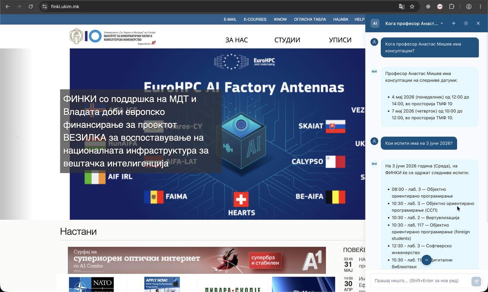
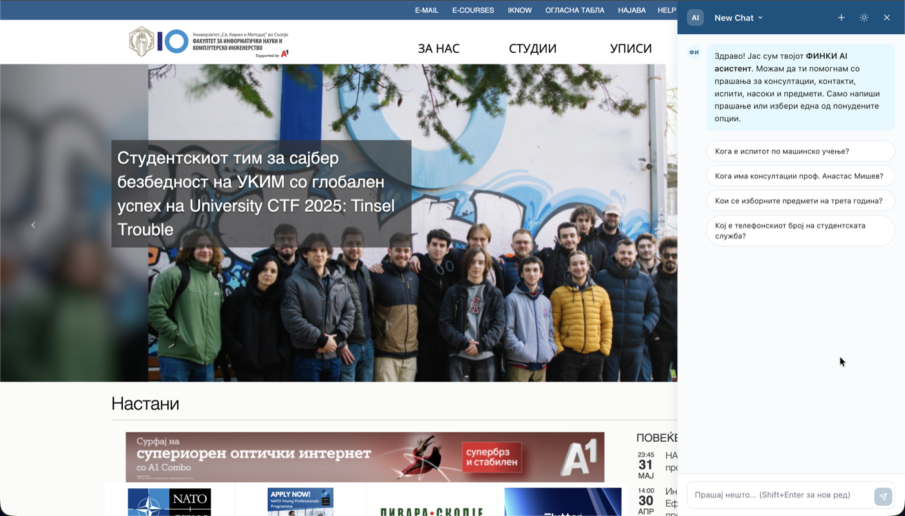
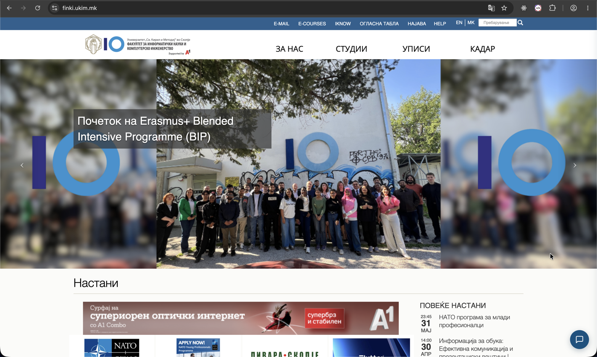
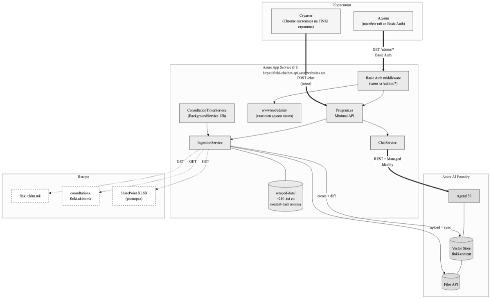

Интелигентен чет-бот за студентите на ФИНКИ. Добивај инстант одговори за консултации, испити, контакти и студиски програми — директно во твојот прелистувач.

ФИНКИ AI Асистент е Google Chrome екстензија која се појавува автоматски кога ќе посетиш било која страница на ФИНКИ (finki.ukim.mk и сите подомени). Со едно кликнување на пловечкото копче во долниот десен агол, се отвора панел во кој можеш да поставуваш прашања на природен јазик.
Зад кулисите, прашањата се обработуваат со помош на Azure AI Foundry асистент кој пребарува во база на знаење направена од службените страници на ФИНКИ. Така, наместо да отвораш повеќе табови барајќи распоред на испити, термини за консултации или контакт-информации, целата ФИНКИ површина ти е достапна преку едно прашање.

Системот ги покрива четири категории на информации, собрани од различни службени извори на ФИНКИ:
Кога професор X има консултации? Каде се одржуваат? Дали има online термин?
Кога има консултации проф. Анастас Мишев?
Распоред на втори парцијални испити, јунска сесија, со точно време и просторија.
Кога е јунскиот испит по Машинско учење?
Телефонски броеви на студентската служба, деканатот, e-mail адреси и работно време.
Кој е телефонскиот број на студентската служба?
Структура на додипломски и магистерски програми, изборни предмети, ECTS, услови за упис.
Кои се изборните предмети во магистерскиот за Софтверско инженерство?
Прашањата се поставуваат на македонски јазик. Системот одговара врз основа на службените содржини на finki.ukim.mk, courses.finki.ukim.mk, consultations.finki.ukim.mk, и SharePoint XLSX распоредите. Кога одговорот не е во базата, асистентот чесно признава „не знам“ наместо да измислува.
Засега екстензијата се дистрибуира како .zip фајл (не е објавена на Chrome Web Store). Инсталацијата трае помалку од една минута.
Кликни на копчето подолу. Ќе биде преземен фајлот finki-ai-assistant.zip (~250 KB).
Двоен клик на преземениот .zip ќе го распакува (или со десен клик → „Extract All“ на Windows / „Open With → Archive Utility“ на Mac). Ќе добиеш папка наречена finki-ai-assistant (или dist).
Во Chrome, во URL барот напиши:
chrome://extensions/
Или: иди во Chrome menu → More tools → Extensions.
Во горниот десен агол на страницата за екстензии, вклучи го прекинувачот „Developer mode“. Ќе се појават три нови копчиња.
Кликни на копчето „Load unpacked“ и избери ја распакуваната папка од Чекор 2. Екстензијата веднаш ќе се појави во листата со екстензии.
Посети било која страница на ФИНКИ. Во долниот десен агол ќе видиш сино копче со „ФИ“. Кликни го и почни да прашуваш.
Отвори finki.ukim.mk →
Пловечкото копче во долниот десен агол по успешна инсталација.
Системот е изграден како клиент–сервер апликација со три логички слоеви:

Овој систем е изграден како дипломска работа на Факултетот за информатички науки и компјутерско инженерство (ФИНКИ) при Универзитетот „Св. Кирил и Методиј“ во Скопје. Целта на трудот е да се покаже како комбинацијата на современи јазични модели (LLM) со класични техники на веб-екстракција може да донесе конкретна корист во академска средина.
Истражувачкиот дел вклучува евалуација со 30 прашања во две конфигурации (со и без RAG), споредба на латенција, анализа на трошоци и безбедносна проценка. Експериментите покажаа дека RAG системот одговара точно во 80% од случаите наспроти 13% за истиот модел без пристап до базата на знаење.